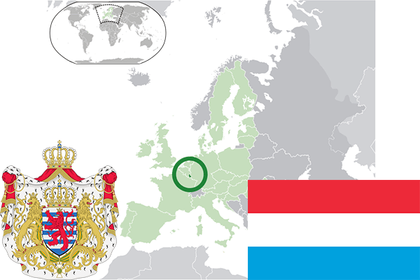

To`liq nomi: Lyuksemburg Buyuk Hersogligi
Region: Markaziy Yevropa
Qonunchilik shakli: Konstitutsion Monarxiya
Mustaqillik kuni: 9-iyun 1815-yil (Fransiyadan)
Poytaxt: Lyuksemburg
Maydoni: 2586,4 km² (dunyoda 67 -o`rinda )
Chegaradosh davlatlari: Belgiya, Germaniya, Fransiya
Aholisi: 590,667 (dunyoda 170 - o`rinda, 2017 -yil roʻyxat)
Aholi zichligi: 222,8/km²
Aholining o`rtacha yoshi: 79,15 yil (82,5 ayollar, 75,8 erkaklar)
Rasmiy tili: Fransuz, nemis va lyuksemburg tillari
Dini: Katolik
Pul birligi: Yevro
Telefon prefiksi: +352
Internet domen: .lu
Xalqaro tashkilotlarga a`zoligi: BMT (1945 – yildan), Yevropa Ittifoqi (1957 -yildan), Shimoliy Atlantika shartnomasi (1949-yildan)
Dengiz va okeanlarga chiqishi: yo`q
YIM: Butun: $ 63.549 mlrd, Jon boshiga $ 107,736 (2017 - yil roʻyxati)
Yirik shaharlari: Lyuksemburg